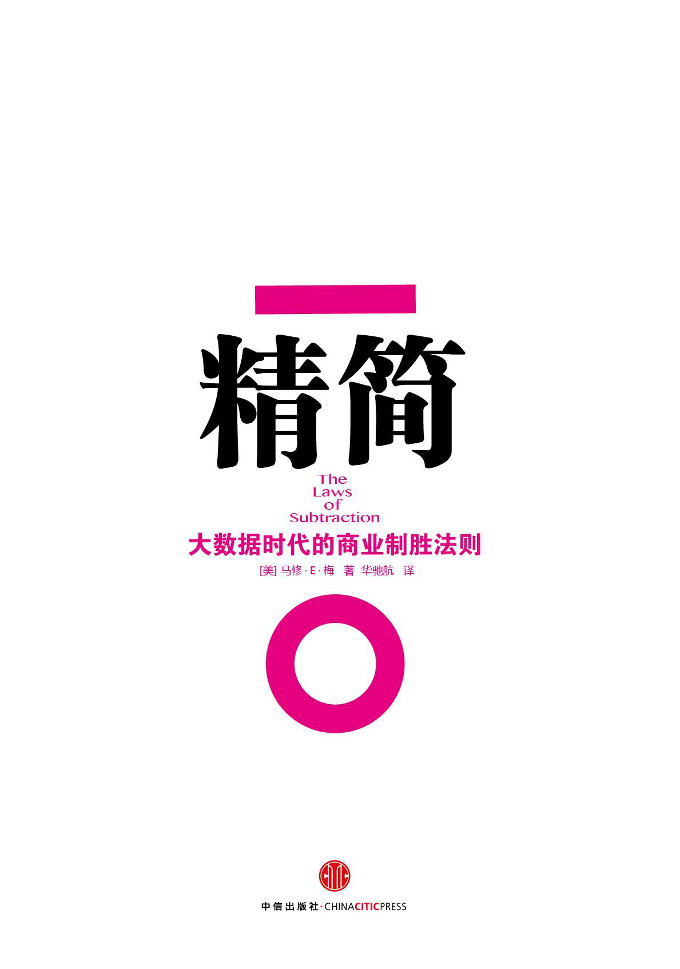

注：【】部分为笔者心得，非原文摘抄。
- 无形之物往往胜过有形之物。
- 最简单的规则缔造最有效的经验。
- 有限的信息能激发无限的想象力。
- 明智的约束更能激发创造力。
- 打破常规才能取得突破性进展。
- 行动不一定胜过按兵不动。
- 在设计过程中，为两个目标而奋斗：简单和清晰。
- 粗体的图标凸显出一份自信。
- 如果你想通过解释而让人把注意力集中到巧妙的点上，那它就不再巧妙了。
- 格式塔知觉理论认为，基于特定的知觉原理，人们在观察互相联系的事物时，倾向于将它们视为一个统一的整体，而不是一个个的独立组成部分。
- 人们独有的能力和创造力就在于，能运用不同的模式在看上去毫无关联的元素之间创建出有意义的联系。
- 年青一代首先就对任何形式的广告都不感兴趣。
- 经商者不仅仅需要了解设计者，他们自身也要成为设计者。——罗杰·马丁
- 一个诗人必须用纯熟的技艺给他的思想画上句号，这样才能够给他的读者提供足够的想象空间。
- 通过精简而产生的创意更加复杂，更需要充满智慧的思量。
- 当我们和周围的人一起尽自己所能工作的时候，工作这件事本身就是有趣而多产的。当有别人比我们更擅长我们在做的事情时，工作就不那么有趣了，因为我们没有做好工作安排。
- 明智的人会筛选知识，而其他的人则在一堆又一堆的信息里迷失。
- 生活的魔力并不在于作更多的补充，而在于学习如何用更少的措施获得更多的结果。
- 消极的人总是无所不用其极地去伤害别人，他们让人分心、让人失望，用他们自己的消极行为和态度去影响别人。——罗伊·鲍迈斯
- 在一个小组中，只要存在一个消极的人，整个小组的绩效就会因此减少 40%。——威尔·菲尔普斯
- 小规模的团队比大规模团队要更有效率。因为当小组的规模变大时，在小组的运作上会耗费更多的精力，而要完成的任务就没法那么受关注了；另外，那些让人头痛的组员还会给其他组员带来更重的负担。——理查德·哈克曼
- 如果你减少人们需要走过的门的数量，那么会有更多的人通过你想让他们穿过的门。
- 对于产品和服务的自信推动我们对它们进行精简。
- 而当你的行事方式变得精简之后，你本身也会变得更加自信。
- 【行李越少，行动越自由。】
- 所谓的科学方法，并不是强行地用一种观点去替代另一种观点。它是一种反驳无效假设的尝试，用精简的手段凸显个中真理。
- 必须要识别出造成偏见的根本原因，并且要根除它。
- 一种经验越是令人愉快、有利且有效，它的意义就越大。
- 目前我们做设计的问题在于，大部分被我们当作正确顺序的流程是建立在设想，而不是观察的基础之上。如果我们先进行观察，再进行设计，就不会需要我们所建立起来的大部分繁杂流程。
- 如果你想在最终的设计中强调场所的特点和背景，那么对于场所历史的理解也能对你有很大的帮助。
- 规章、政策、条款等都是创意的杀手。人们在无拘无束的时候才能完成最好的工作。如果你画很多时间来计算你花了多少时间完成工作，那么在计算时间时你就没有做出任何的创新举动。
- 工作的本质在于改变。
- 世界是由内部关系、悖论、自我组织和自然发生的事情所支配的。
- 无论你想要解决什么问题，首先要寻找自然的模式和规律。
- 人们倾向于使事情变得比它们的实际情况更复杂。
- 没有受到过多限制的人们在少量简单规则的约束下，可以实现令人惊叹的成果。
- 团队的规模和业务范围并不总是通往成功的关键。
- 【适度的忙碌有助于保持思维的活跃性。】
- 成功的编程需要深入而不受打扰的思考。
- 任何创作的终极目标就是要让人们花更多的时间去仔细观察、关注一个事物。
- 做任何事情都要依靠正确的开端。
- 妨碍创造力的东西主要有两种：习惯和障碍。
- 视觉叙事是一种精简化的艺术形式，决定性因素是要找出内容过多和过少之间的平衡。
- 作为一个创造者，我们的工作是去设计汽车，允许驾驶员去任何他们想去的地方。
- 任何演讲都应该只有一个或两个重点。
- 减少显而易见的元素，并丰富有意义的事物。
- 有时候，你必须先将你的目标丰富化，否则无法得知哪些元素需要被精简。
- 恐惧不仅不会让你的表现更好，反而只会让它变得更糟。
- 用词少而精的演讲者能够更好地表达自己，他们自身就有着一种领导力。
- 当你可以言简意赅的时候，为什么还要说那么多呢？